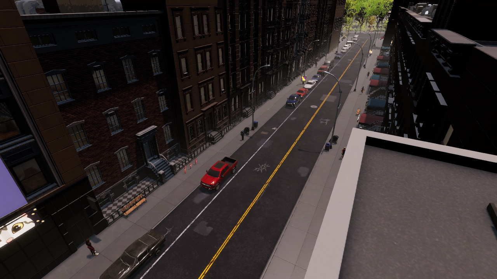

Persistent City · Big Ambitions mod

Traffic you can get stuck in.
Cars take up road space across the whole city, even out of view. They queue at signals and back up behind each other, and new trips route around queues and blocked streets.
Near you, citizens get real pedestrian and car bodies.

Persistent City · development build · in-game screenshot04 / 05